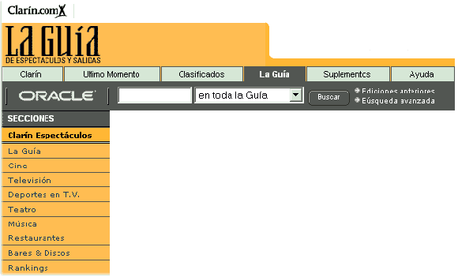
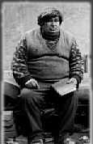

|
 |
Este articulo salio publicado en el diario Clarin el 21/04/2002:

| Los tres integrantes años atras donde todo era exito y armonia, ahora no dan notas juntos y en su entorno reinan los rumores mas diversos. |
HIJOS DEL SOL
EN CRISIS...
Escandalos, Exitos y Rumores
Tras estar ocho años juntos los HIJOS DEL SOL atraviesan el momento mas duro de toda su exitosa carrera, rumores, críticas despiadas, luchas internas, enfermedades y cambios de
companía
discográfica atentan contra la vida de esta banda que supo cambiar
la hisotria de la música nacional.
¿Que llevo
a la banda a esta situación?, todo empezo en Febrero de este año,
cuando en el programa de Rial "Intrusos en la noche" presentaron
escenas en las que se podía ver a Rodrigo teniendo relaciones homosexuales
con tres hombres en un conocido hotel céntrico, encima uno de ellos
era menor. Obviamente después de esto se sucitó el escándalo,
notas y comentarios las venticuatro horas del día en todos los programas
de chimentos con los taxi boys que participaban del famoso video... pero ¿dónde
estaba Rodrigo?, se tejieron las mas diversas teorías: algunos decían
que estaba en una granja de rehabilitación, otros que se había
dado a la fuga por problemas impositivos, otros más osados llegarón
más lejos diciendo que se había echo travesti...
Finalmente luego de semanas, investigaciones y negociaciones "Clarín
Espectáculos" dio con el virtuoso bajista y este accedió
a una nota, por expreso pedido de Rodrigo no podemos decir el lugar donde
se lo ubicó. El aspecto actual del músico es muy desmejorado,
a simple vista pesa unos 25 kilos más, está con una prominente
calvicie, con la rupa sucia y rota...
- Rodrigo,
¿cómo te enteraste del escándalo?
- Yo estaba en casa con un "amigo" y suena el teléfono,
era Exe, estaba sacado como loco. A los gritos empezó ¡¡pu..
de mier..!!! te dejaste filmar, ahora estas en la tele chupándole la
pi.. a un tipo y con un florero en el or..!!! ¡¡que sos un pe...
que nos van a ca... la carrera!!!. Imaginate, yo no entendía nada,
prendo la tele y no lo podía creer, ahí estaba yo en cadena
nacional tirandole la goma a un negro africano.
- ¿Cómo
está actualmente la relación entre los integrantes del grupo?
- No
te sé decir, desde ese día que no hablo con ellos, aparte con
todas las cosas que se vinieron hablando de nosotros en este ultimo tiempo
no sé, no quiero salir en público, le quiero pedir a la gente
que no me juzgue, que no le hice mal a nadie, y que lo que hago en mi vida
privada no tiene porque importarles... perdoname pero no quiero hablar mas
estoy muy dolido...
 |
| Rodrigo en la actualidad, avejentado y con sobrepeso. |
todos los abusos
y enajenaciones posibles, imágenes escalofriantes que quedaran en la
mente de los espectadores por siempre. Pero fueron los últimos minutos
del programa los que cambiaron para siempre la vida de HIJOS DEL SOL, en ellos
el cronista asiendo uso de la cámara oculta accede finalmente a una
entrevista con el dueño de esta red de prostitución, cuando
llega a la cita se sorprende, el proxeneta era Exequiel Sosa...
El escándalo tomo niveles astronómicos, se allanó el
departamento y todas las propiedades del músico, notas a las prostitutas
en todos los programas... pero de Exequiel ni rastros, se había dado
a la fuga, muchos decían que se había ido del país, otros
que se había suicidado, se hablo también de un asesinato por
ajuste de cuentas, la policía lo sigue buscando y nadie sabe de el
excepto "Clarín Espectáculos" que logró una
nota exclusiva con el delincuente, de aspecto desmejorado.
- ¿Porqué
armó una red de prostitución?, usted ya era millonario, no necesitava
dinero...
- Es que el Hijo de Pu.. de Gonzalo me estafó, se quedo con toda mi
plata de HIJOS DEL SOL, y como yo de chico iba mucho a cabarets y conocía
el ambiente y el negocio de la prostitución, vi la oportunidad y me
mande...
- Pero ¿no
le daba pena esas pobres mujeres?
- No, ni un poquito.
- ¿Como
es su relación hoy con los otros integrantes de HIJOS DEL SOL?
- Del put.. de Rodrigo no se nada, y al Hijo de remil Pu.. de Gonzalo
lo estoy buscando, tengo que arreglar unas cuentas con él... si aparece
flotando en algún río ya sabes quien fue...
Violento, frío e insensible se va sin decir a dónde en busca de venganza, cuesta creer que sea esa la persona que capto la atención de miles de adolecentes, que enamoro a millones de quincianeras con melodías dulces como "Never Know"...
| Exequiel hoy, calvo, excesivamente flaco y prófugo de la justicia. |
medios, relatos
de personas estafadas por Gonzalo circulaban en la TV, la mayoría de
ellos jubilados que habían quedado en la calle, gente que con sus relatos
lograban conmover los corazones de una audiencia que no podía salir
de su asombro.
La policía allanó las viviendas de Gonzalo y el juez Oyarvide
se hiso cargo de la causa, le pidieron captura y a la semana fue encontrado
en la casa de su novia.
Hoy está detenido en Ezeiza esperando por un juicio oral y público,
nunca habló para la prensa, nunca le explicó a sus fans el porqué
de sus actos. Luego de semanas de negociaciones Gonzalo aceptó hablar
con nosotros en exclusiva.
- Gonzalo,
¿qué te impulso a estafar a esa pobre gente?
- Yo no hice nada, lo juro, soy inocente, yo simplemente falsificaba documentación
para luego rematarle la casa a la gente, nada más, te aseguro que nunca
hice nada malo...
- ¿Cómo
es tu relación con los otros miembros del grupo hoy?
- No
se, hace tiempo que no tengo noticias de ellos, a Exequiel la última
vez que lo vi fue cuando le remate su casa y a Ro lo vi hace poco en la tele,
estava trabajando de actor porno creo, o algo así...
Luego de escucharlo quedamos azorados, no logramos entender su discurso, no sabemos si nos estaba tomando el pelo o si simplemente es un tarado. El aspecto de Gonzalo hoy es el de una persona descuidada, mal alimentada, se lo ve más viejo... Nos cuesta creer que esta misma persona alguna vez grabó discos que vendieron 10.000.000 de unidades en todo el mundo, que hizo giras alrededor de todo el planeta, que filmó videos... nos cuesta creer que esta persona alguna vez tuvo el mundo a sus pies y que por ambición, codicia y falta de moral hoy esta en una fría celda en la carcel de Ezeiza.
| Gonzalo en prisión, mal alimentado, sucio y con la mirada perdida. |
Para terminar de sumergir a la banda en crisis en las últimas semanas se sucitó otro drama en el entorno del grupo, su manager de toda la vida Claudio Romero, él que los llevo a la cima, fue encontrado en su departamento desmayado con un cuadro de sobredosis de alcohol y drogas, afortunadamente salvo su vida porque las prostitutas con las que estaba al ver su estado decidieron llamar al SAME. Actualmente continúa internado en observación.
Otro tema que los tiene a mal traer y nos hace ver más incierto su futuro es el de su companía discográfica, al hablar con el
gerente de EMI este nos dijo: "en esta semana vamos a reunirnos con el directorio de la companía para ver la forma de rescindirles el contrato; es una pésima imagen para nuestra empresa que este grupo de mafiosos, delincuentes y degenerados trabaje para nosotros..."
Esta es la tristísima situación actual de HIJOS DEL SOL una banda que lo tuvo todo y solo supo perderlo...